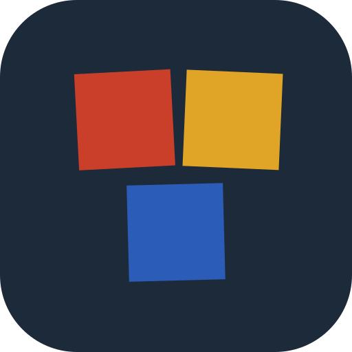

Case après case.
0 1 2 3 4 5 6 7 8 9
- Police
- Unbounded
- Rôle
- Les titres, les chiffres, les numéros des cases.
- Variable
--font-titre: —- Graisses
- —
- Fichiers
- —
- Licence
- SIL OFL 1.1 · la licence
Design system · Le parcours
C’est le style de la marque Encrine, pour la page d’accueil et la documentation : son logo, ses couleurs, ses polices, ses composants et son ton.
Chaque classe a son propre design system, choisi par son enseignant parmi trois maquettes de mini-site. Celui-ci est le style du moteur, pas celui des classes. Toutes les valeurs de cette page sont lues dans styles.css et dans assets/ : elles ne peuvent pas s’écarter de ce que le site affiche.
Voir la page en
1 · Le logo
Le symbole, ce sont quatre cases de marelle, une, deux, une, comme on les trace dans la cour ; aucune n’est droite. Le nom, « encrine », en minuscules, est tracé dans Marelle, la cursive scolaire. Le logo existe en deux fichiers : à l’encre ardoise pour les fonds clairs, à la craie pour les fonds sombres. Le site passe de l’un à l’autre tout seul.
Lues dans le fichier du logo, de haut en bas : chaque case a sa couleur de case et son angle, et une ombre portée, comme les cases du site.
Autour du logo, laisser vide au moins la largeur d’une case. Le logo entier ne descend pas sous 32 px de haut (l’en-tête du téléphone le montre à 40 px, 32 une fois resserré) ; en dessous, on prend l’icône.
L’icône d’onglet ne garde que trois cases, sans fond, pour rester lisible à 16 px. Celle de l’écran du téléphone pose les mêmes cases sur un fond ardoise, parce que l’écran d’accueil exige un fond.
rel="icon") : les cases rouge, ocre et bleue, sans fond. Ouvrir le fichier
Encrineapple-touch-icon) : les mêmes cases sur fond ardoise. Ouvrir le fichierLe logo se pose tel quel, sur la craie ou sur l’ardoise. On ne le redessine pas, on ne l’écrit pas dans une autre police.
2 · Les couleurs
Un fond de craie, des cartes de feuille, une encre ardoise : c’est tout le texte du site. Les couleurs vives ne servent qu’aux cases. En sombre, la craie et l’ardoise échangent leurs rôles ; les cases ne changent pas. Chaque pastille est peinte avec la variable elle-même ; les deux petits carrés montrent sa valeur en clair et en sombre.
--craie—
Le fond de la page, et l’encre en sombre.
--feuille—
Les cartes, et une section sur deux.
--ardoise—
Le texte, les titres, le bouton principal, l’encre du logo.
--ardoise-douce—
Le texte courant des cartes, les chapeaux, les légendes.
--trait—
Les filets : le pied, l’en-tête descendu, les pointillés.
--trait-fort—
Le cerne du lien GitHub, les pastilles « Plus tard ».
Huit couleurs vives et la case d’encre, une par case du parcours. Chacune a son texte : blanc, ou ardoise sur les trois plus claires. Le contraste est calculé ici, sur les valeurs du fichier.
--case-bleu—
--case-rose—
--case-vert—
--case-ocre—
--case-violet—
--case-turquoise—
--case-rouge—
--case-encre—
--case-ciel—
--sur-case-clair—
Le texte blanc des cases foncées.
--sur-case-sombre—
Le texte ardoise du rose, de l’ocre et du ciel ; le fond du bloc appli.
3 · Les polices
Unbounded pour les titres et les chiffres, Figtree pour le texte, Marelle pour le nom et les étiquettes. Toutes trois sont sous licence libre SIL Open Font License 1.1 et servies depuis fonts/ : aucune requête vers un service extérieur, comme le promet la page Confidentialité.
Case après case.
0 1 2 3 4 5 6 7 8 9
--font-titre : —Répondez à quelques questions, une par case : le niveau, la zone de vacances, le thème de l’année… Encrine fabrique le reste.
--font-texte : —le niveau, la zone, Prêt !
La cursive scolaire de l’Éducation nationale, celle qu’apprennent les élèves. Le nom « encrine » du logo est tracé avec elle.
--font-cursive : —Chaque ligne est l’élément réel du site, avec sa classe ; la mesure à gauche est relevée dans la page, à la largeur de votre écran.
Surtitre.surtitre
Comment ça marche
Titre de pageh1
Titre de section.section h2
Titre de carte.etape h3
Chapeau.chapeau
Répondez à quelques questions, une par case.
Textebody
Encrine travaille dans votre propre espace : votre classe vous appartient.
Étiquette.sommaire__titre
Sur cette page
4 · Les espaces et les formes
Les cases et les boutons sont carrés, comme à la craie ; les cartes ont des coins arrondis ; les pastilles sont rondes. L’ombre ne flotte pas : elle tombe droit, sans flou, sous la case. Et chaque case penche un peu, jamais plus de quatre degrés.
Les marges et les écarts ne prennent que ces valeurs.
Trois formes, pas davantage.
0--angle-carte --angle-pastille La page tient dans --largeur : .
Pleines et sans flou, plus foncées en sombre.
--ombre-case--ombre-bouton5 · Les composants
Ce qui suit n’est pas un dessin : ce sont les composants de la page d’accueil, avec les classes de styles.css. Ce que vous voyez ici est exactement ce que le site affiche.
Le motif de tout le site : un carré de couleur, une étiquette en cursive, un chiffre en Unbounded, une ombre franche et une légère rotation, jamais la même d’une case à l’autre.
Un clic sur « Créer ma classe », puis « Use this template ».
Rubrique Pages, choisissez GitHub Actions.
Tapez /nouvelle-classe.
Vous jugez sur le papier.
.etapes .etape .case .case--sombre .case__etiquette .case__chiffre · rotations relevées : — · ombre --ombre-case
Des cases, eux aussi : carrés, 54 px de haut (44 en petit). Le principal est plein, avec une ombre qui s’efface à l’appui ; le second est cerné.
.boutons .bouton .bouton--principal .bouton--petit · « Créer ma classe » ouvre ici le vrai panneau.
GitHub est un lien discret, cerné d’un filet fin, sans fond ; sa cible garde 44 px de haut pour le doigt. Les pastilles disent un état.
PrêteBientôtPlus tard
l’entretien de zéro d’une classe
.nav__github · .etiquette-etat--pret --bientot --plus-tard · .entretien__etiquette .depart__etiquette
Toujours visible, collé en haut de l’écran : le logo, qui ramène en haut, le menu, et GitHub. Une fois la page descendue, il prend un filet et se resserre : sur ordinateur, il remonte de — sur —, sans rien déplacer dans la page, et le logo rapetisse un peu. Sur téléphone, une seule ligne, et le menu se déplie dans un panneau.
.entete .entete--descendu .marque .nav · position: sticky · les ancres s’arrêtent juste dessous (scroll-margin-top).
En tête des pages longues : une petite case de couleur par section, posée de travers.
.sommaire .sommaire__liste .sommaire__case
Les questions numérotées dans de petites cases ardoise, qui penchent tour à tour.
.entretien .entretien__etiquette .entretien__liste
Une case numérotée, un titre, une phrase, et les points toujours visibles.
Entraînement à deux niveaux et évaluation de fin de période, prêts à photocopier.
.fonction .fonction__case .case--sombre-texte .fonction__phrase
Lue dans classes.json et construite par le même script que l’accueil. Elle prend les couleurs du thème de la classe, jamais celles d’Encrine.
Chargement de la classe d’exemple…
.classes .classe .frise .classe__badge .classe__faits · site.js
Le seul bloc à l’ardoise dans les deux thèmes : il annonce que la classe s’installe sur le téléphone.
Sur votre téléphone, sur la tablette de la classe
Le site de votre classe se pose sur l’écran d’accueil, avec son icône à ses couleurs, et s’ouvre en plein écran.
.appli .appli__etapes
« Créer ma classe » et « Partir de cette classe » ouvrent le même panneau : trois étapes, puis l’entretien. Ci-dessous, en petit ; le bouton ouvre le vrai, au-dessus de l’en-tête.
dialog.partir .partir__etapes .partir__commande · Échap pour fermer, le focus revient au bouton.
6 · Le ton
Le site s’adresse à tous les enseignants, avant qu’ils commencent : il les vouvoie. L’outil, lui, travaille avec un collègue : il le tutoie, et le lui annonce dès la première question.
L’accueil, la documentation, cette page : des phrases courtes, à la deuxième personne du pluriel.
Sur l’accueil« Répondez à quelques questions, une par case. »
Dans le panneau« Choisissez un dépôt public : c’est ce qui permet de mettre votre site en ligne. »
Une seule fois, dans le texte de la première question. Si l’enseignant préfère le vous, l’outil passe au vous aussitôt, et s’y tient.
Première question de l’entretien« Je te tutoie, comme entre collègues — si tu préfères le vous, dis-le-moi. »
Une valeur par défaut, annoncée« Je pars sur deux à trois fiches par semaine, dis-moi si c’est trop. »